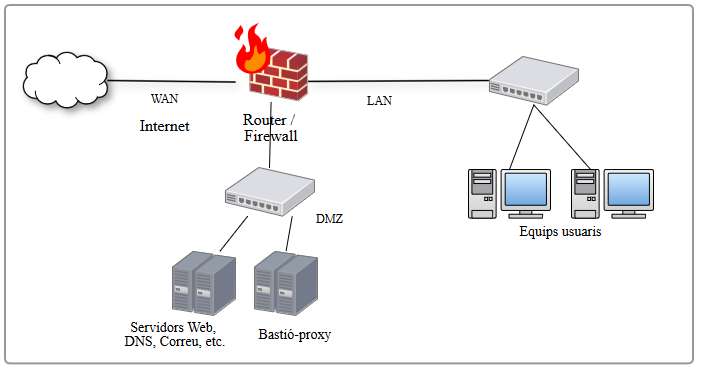
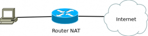
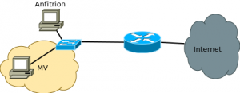
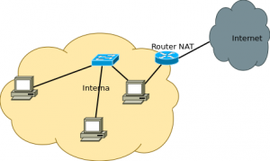
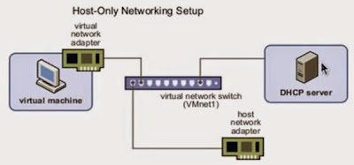

LEED CADA ENUNCIADO CON ATENCIÓN
Descarga PFSense - PFSense
Documentación PFSense - Documentación
Problemas con paquetes Pfsense - Problemas
GNS3 - Descarga
Documentación GNS3 - Documentación
Guías de uso de GNS3 - Labs
El objetivo de este proyecto es crear una red más segura, familiarizarse con el concepto de DMZ y explorar las posibilidades de la distribución PFSense/Opnsense.
En esta primera parte del proyecto deberéis realizar un montaje de una red DMZ con tres patas.

pfSense vs OPNsense
pfSense/OPNsense son distribuciones FreeBSD (64 bits) que proporcionan diferentes servicios de red y funcionan como Firewall.
Se puede configurar desde una interfaz web accesible desde la red LAN.
Cuando configuramos el firewall, debemos pensar que las reglas se aplican a las peticiones de inicio de conexión. Las respuestas se permiten automáticamente si hay una conexión iniciada (porque se ha permitido el paquete de inicio).
Recordad de comprobar el hash del fichero descargado antes de comenzar.
Visibilidad de equipos desde el anfitrión
NOTA: Para poder ver desde el equipo anfitrión las máquinas internas, debéis añadir a la tabla de rutas del host anfitrión la red DMZ (192.168.200.0) y si es necesario desde la LAN (192.168.100.0). Su gateway será la IP del pfSense en la red WAN (mirad cuál os asigna). Para añadir una ruta a la tabla de rutas usad el comando:
ip route add 192.168.200.0/24 via ip-externa-PFSense
ip route add 192.168.100.0/24 via ip-externa-PFSense
// Para ver la table de rutas y comprobar que se han añadido
ip route
Nuestro firewall será un PFSense con 3 interfaces:
Elegid un programa para hacer mapas lógicos de red. Haced el mapa lógico de vuestro montaje. Haced constar:
El ordenador de la red LAN debe poder navegar por Internet.
El servicio SSH y el servicio de administración web del Firewall deben estar permitidos en la interfaz WAN. La contraseña del administrador debe ser segura. Una vez hecho, podréis administrar el Firewall desde el equipo físico si lo preferís.
Interfaz de administración
El PFSense no permite por defecto la configuración web desde la interfaz WAN y por tanto se debería configurar por una de las interfaces LAN (o sea, por ejemplo desde la máquina virtual Ubuntu Desktop).
Una vez instalado PFSense se puede asignar la configuración de las interfaces y determinar la dirección IP. Desde un equipo de la red LAN se debe abrir un navegador web y abrir la aplicación web de administración de PFSense.
Pondremos un equipo servidor en la DMZ y un cliente en la red local, similar a como se ve en la imagen del comienzo:
Ubuntu Server con la dirección 10 de la red DMZ, configurado de forma estática NO por DHCP.
Un equipo cliente con la dirección 50 de la red LAN, que puede ser un Ubuntu Desktop.
Personalizado quiere decir que aparecerá vuestro nombre y apellidos en el banner.
Actualizad el mapa lógico.
Configurad las opciones de Firewall->Rules:
El firewall debe permitir el tráfico iniciado desde la red interna hacia la DMZ, solo para los servicios que tenga el servidor de la DMZ. Debe llegar la respuesta (esto último es automático en PFSense).
También debe permitir que los servidores de la DMZ accedan tanto a Internet como a la red externa que es del rango 172.16.101.0/24, y les llegue la respuesta.
Se debe permitir acceder a los servidores de la DMZ desde la red externa, solo para los servicios que tenga el servidor de la DMZ. NO utilicéis NAT en la interfaz WAN, si no que debéis abrir los puertos necesarios ya que la IP de destino será la del servidor en la DMZ.
No se debe permitir:
El objetivo de la práctica es poder comprobar los siguientes puntos (más adelante configuraremos servicios y más limitaciones):
(4 puntos) Hacer comprobaciones que demuestren los puntos que siguen. En la captura, sin cortes, se debe ver los parámetros IP (la dirección, máscara, tabla de rutas) de la máquina desde la que se está haciendo la prueba
Hacer comprobaciones que demuestren desde un equipo de la red interna:
Hacer comprobaciones que demuestren desde un equipo de la red externa (equipo anfitrión)
Hacer comprobaciones que demuestren, desde un equipo de la DMZ
Permite que un equipo virtual tenga acceso a internet de forma fácil. Se crea un router virtual que implementa NAT y traduce las direcciones de los equipos invitados.

Los equipos invitados no son accesibles directamente desde el anfitrión, pero se puede configurar el reenvío de puertos hacia la máquina invitada y así exponer servicios específicos de la máquina invitada.
Si se necesita que los equipos invitados sean accesibles desde el anfitrión o desde otros equipos de la red, se puede configurar un reenvío de puertos. Por ejemplo, si se quiere acceder a un servidor web en un equipo invitado, se puede configurar un reenvío de puertos para que el tráfico que llegue al puerto 80 del anfitrión se redirija al puerto 80 del equipo invitado.
Permite que el equipo invitado tenga acceso a la red física directamente.

Se comportará como si fuera una máquina física más y tendrá una IP de la red física (si existe un servicio DHCP).
Se puede acceder desde la máquina anfitrión y desde cualquier equipo de la red física.
El equipo invitado se conecta a una red virtual interna. Los equipos invitados pueden comunicarse entre ellos, pero no pueden acceder a la red física ni a internet.

Habría que configurar otro invitado para hacer de router (con una tarjeta en modo puente o NAT), si se quiere dar acceso a internet.
Tampoco se puede acceder al invitado desde el anfitrión.
La red solo-anfitrión es una red virtual que se crea en el equipo anfitrión. Los equipos invitados se conectan a esta red y pueden comunicarse entre ellos y con el anfitrión, pero no pueden acceder a la red física ni a internet.
Se crea una nueva interfaz en el equipo físico que se conecta a la red "solo-anfitrión". Así podemos interactuar con los invitados desde el equipo físico, pero sin dar acceso desde la red física.

Hypervisores tipo 1 vs tipo 2
Más información en AWS